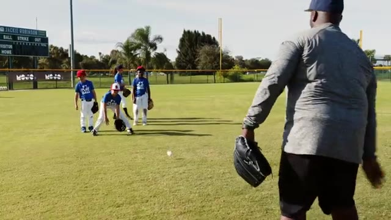
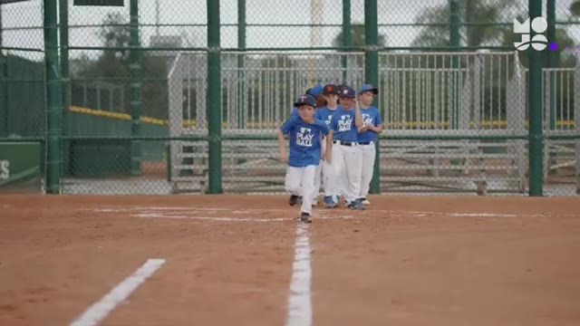
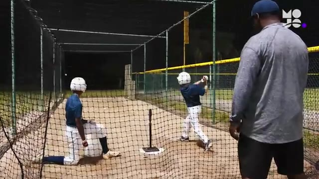
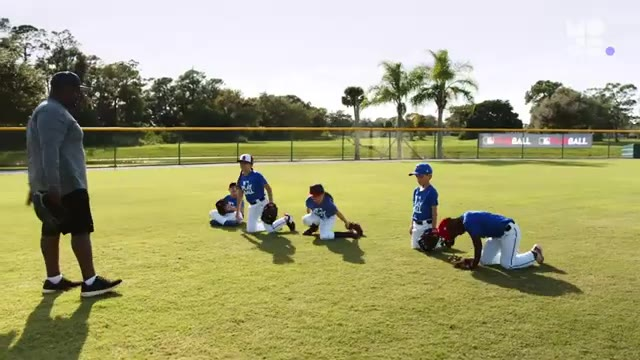
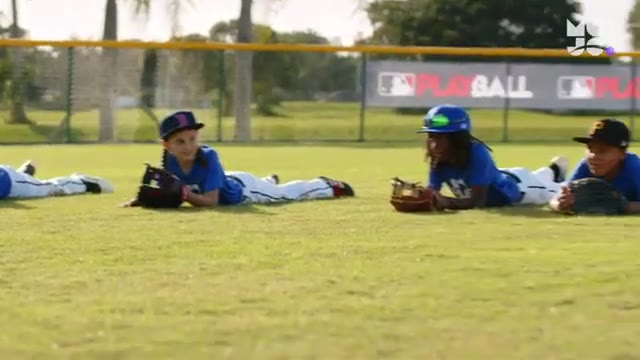
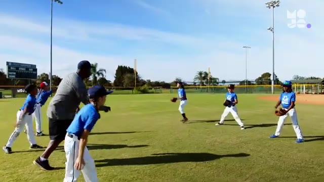
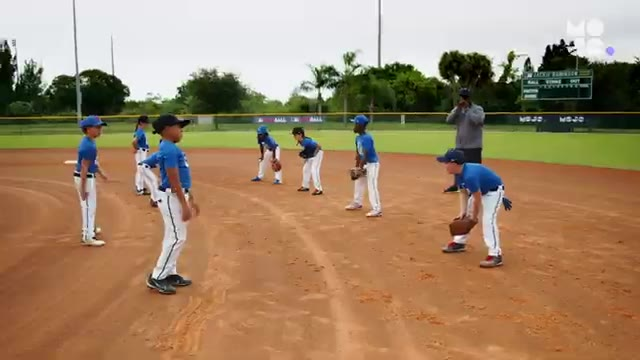
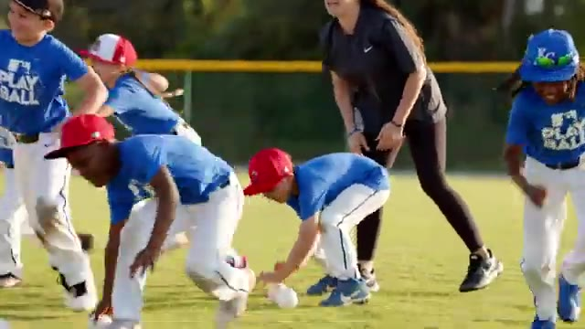
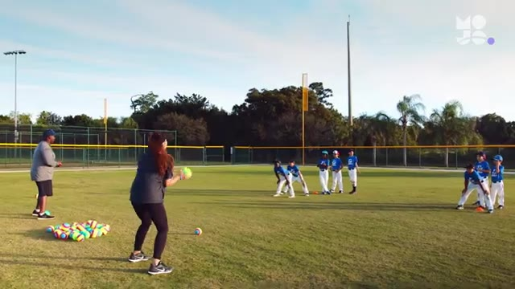
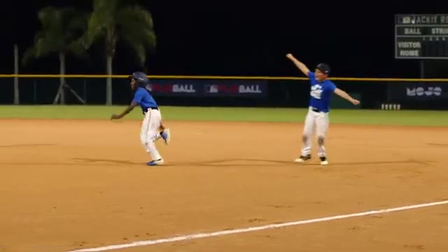

10 Best Baseball Drills for Beginners | Fun Youth Baseball Drills From the MOJO App
Auto-generated from the video. Tap a row to jump · tap "Watch" on any drill to open YouTube at the exact moment.
#01 Alligator Traps
▶ Watch on YouTube · 0:12

kids will love gobbling up grounders in this game we call alligator traps line up your team and stand 10 ft away the first player in line gets into a set stance with knees bent and hips low whether you're playing softball or baseball the game is the same here's how it looks roll …
#02 Base Path Blitz
▶ Watch on YouTube · 1:17

in this game called base path Blitz here we go here we go line up your team behind home plate you stand in foul territory near one of the base paths if you have a second coach you can cover both baseball and softball players use this game to prepare for any base running scenario …
#03 Tea Time
▶ Watch on YouTube · 2:50

into line drives in this game we call Tea Time divide the group into pairs lined up outside the batting cage within each pair name a hitter and a feeder the first team steps up to the tea in the cage with their helmets on whether you're playing softball or baseball the game is th…
#04 Lazy Catch
▶ Watch on YouTube · 4:07

grounders in this game we call Lazy catch divide your team into groups of five you grab a ball and stand 15 ft away from the first player in line whether you're playing softball or baseball this game is the same here's how it looks all five players get down on both knees without …
#05 Belly Up
▶ Watch on YouTube · 5:25

in this game we call Belly Up line up your team and tell everyone to lie down on their bellies you stand about 20 ft away with a ball whether you're playing with softballs or baseballs the game is the same here's how it looks roll the ball towards the first player in line ready u…
#06 Up Top Down Low
▶ Watch on YouTube · 6:30

skills in this game we call up top down low divide players into pairs spaced about 10 ft apart and give each pair a ball whether you're playing softball or baseball the game is the same be ready to catch be ready to catch here's how it looks ready go on your call players begin th…
#07 Force Out Tagout
▶ Watch on YouTube · 7:33

bases in this game we call Force out tagout divide the group into pairs of one Runner and one Fielder with a glove and a ball spread the pairs out across the base pads standing about 10 ft apart whether you're playing with softballs or baseballs this game looks exactly the same a…
#08 Cleanup Crew
▶ Watch on YouTube · 8:42

Mojo get that ball off my yard this is Cleanup Crew use cones to create two adjoining rectangles one zone in the infield dirt and the other in the Outfield grass then place an equal number of practice balls in each finally divide your group in half with one team assigned to each …
#09 Grab Bag
▶ Watch on YouTube · 9:48

grounders and popups in this game we call grab bag place two cones 10 ft apart in the Outfield then divide the team in half and line up each group behind a cone you stand about 15 ft in front of and between the two cones with a bucket of practice balls if you have help you can se…
#10 Blast Ball
▶ Watch on YouTube · 11:12

in this low stakes High fun scrimmage that we call blast ball divide your team in half with one group up at bat and the other in the field without gloves you'll pitch for both teams but instead of a metal bat you'll use a plastic one and instead of a softball or baseball you'll u…